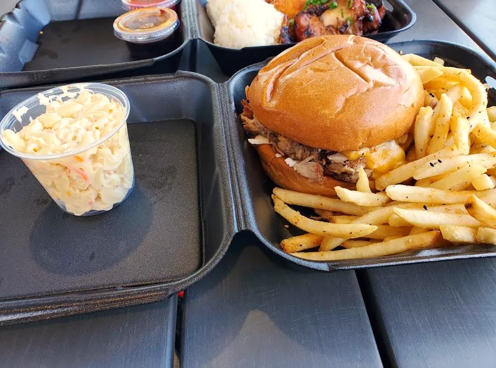

9th Island Grill
Hawaiian Plate Lunch
3459 St Rose Pkwy Ste 100, Henderson, NV 89052
Rating: 5/5
This restaurant was very good. I ordered the mixed plate with BBQ chicken and Chicken Katsu and it was very delicious. It included 2 scoops of rice with a side of Mac salad. The pulled pork sandwich was very tasty as well and would order again. I enjoyed that all sauces came on the side for dipping and all the food was nice and hot.
Mixed Plate (BBQ Chicken & Chicken Katsu) · Pulled Pork Sandwich
About the place
Hawaiian plate-lunch spot in St. Rose Square in Henderson, open every day from 11 AM to 8 PM. Plates come with 2 scoops of rice and macaroni salad, with options like kiawe-grilled 9th Island BBQ chicken glazed in their teriyaki sauce, panko-crusted chicken katsu, garlic chicken, kalua pork and loco moco. Mixed plates let you pick two meats, and the menu also covers sandwiches, poke, saimin and ramen. Most plates were about $15 when checked in October 2026.
What other diners say: Reviewers on Yelp and DoorDash often praise the big portions, the BBQ chicken and garlic chicken plates, and the friendly staff. Some mention the chicken can come out dry on off days, and opinions on the poke and ramen are mixed.
Sources: the Yelp menu and listing, Apple Maps and DoorDash. Summaries are paraphrased, not quotes.
About the place
Mexican restaurant on S Suncoast Blvd in Homosassa, with a full bar. The menu covers Mexican-American favorites like fajitas, burritos, chimichangas, quesadillas and enchiladas, plus seafood dishes such as chipotle shrimp. Guacamole is made at the table.
What other diners say: Reviewers on Google and Yelp often praise the fresh, hot food, friendly staff, fast service and welcoming atmosphere. Some mention long waits at busy times and occasional inconsistency.
Sources: Apple Maps (Yelp), Restaurantji and Foodeist (Google reviews). Summaries are paraphrased, not quotes.




Comments
Sign in with GitHub to leave a comment or reaction.